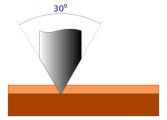
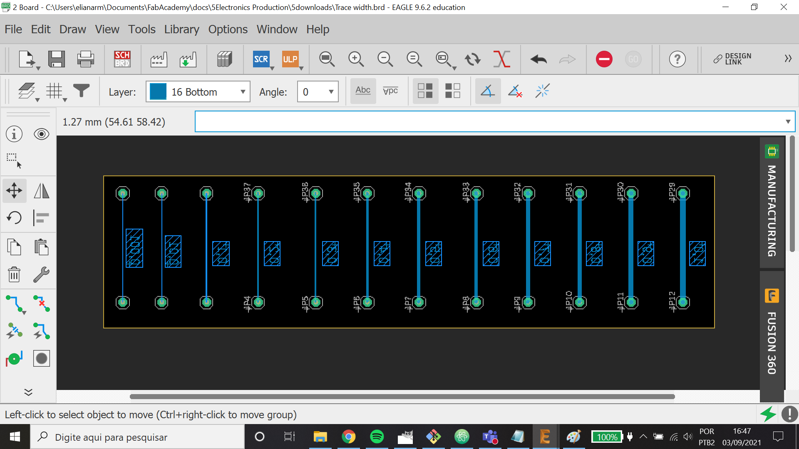
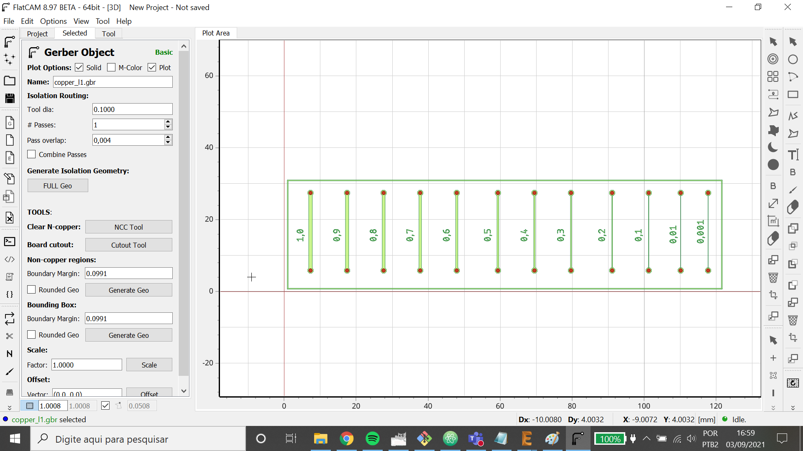
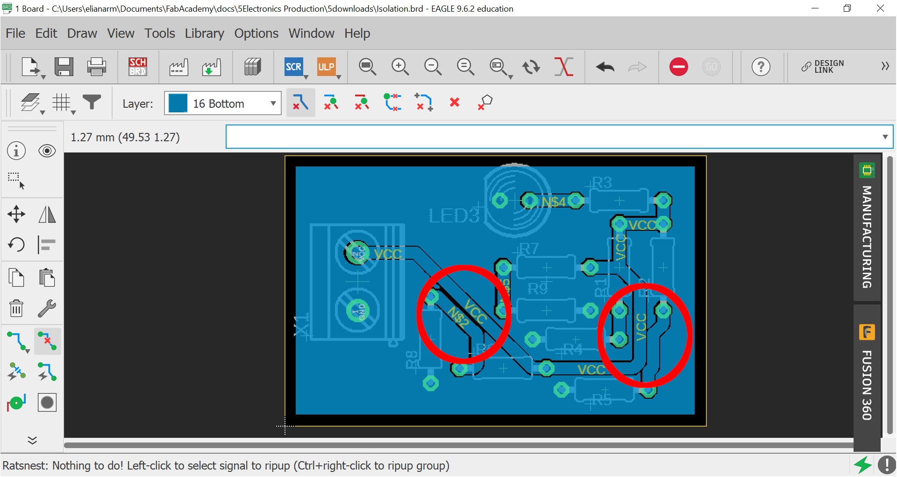

5. Electronics Production¶
Group assignment¶
- Characterize the design rules for your PCB production process: document feeds, speeds, plunge rate, depth of cut (traces and outline) and tooling.
- document your work (in a group or individually).
Design rules for PCB production¶
Minimum trace width¶
The minimum trace width that we were able to produce using both the Roland MDX-540 and Rolland MDX-40A was 0,12mm/4,72mils due to two factors:
- Unevenness of phenolic based PCB's
- Difficulty of finding micro end-mills at the Brazilian market

As it's difficult to find micro end-mill to do the engraving part of the boards we end up using tapered mills instead, which causes some problems as the deeper you go into the material, thicker the mill gets.
File to test¶
Similar to the file linetest given by Neil for the students of class 2021, we made a simple PCB using the software Autodesk Eagle. The goal here was to test the performance of Roland MDX-540 milling different traces width (range between 0.001 and 1.0 mm).

To generate the gcode with its commands and parameters the software FlatCAM was used. In it, we can adjust depth cut, multi-depth, feed rate, spindle speed...

For more details about how to prepare files and to mill a PCB using the machine Roland MDX-540 see the Individual Assignment.
Milling¶
Using a tapered end-mill of Ø 0,1mm (and 20°) and depth cut of -0,14mm (the default depth of -0,11mm was not enough, so we added more 0,03mm to this parameter), we had the result below. We can note that was removed much more material than necessary due to the format of the mill.

Using the equipment called stereoscope microscope Stemi 508 and the software AxioVision, we were able to measure the real width of the traces. Just taking a snapshot with super zoom and using the dimension command.


{kind=link}
Here is a table with the virtual widths of the traces (Eagle parameters) and the real ones (milled by a tapered end-mill).
| Virtual | Real |
|---|---|
| 1,0mm | 0,82mm |
| 0,9mm | 0,72mm |
| 0,8mm | 0,62mm |
| 0,7mm | 0,52mm |
| 0,6mm | 0,42mm |
| 0,5mm | 0,32mm |
| 0,4mm | 0,22mm |
| 0,3mm | 0,12mm |
Therefore, the minimum trace width that we were able to produce using the Roland MDX-540, depth cut of -0,14mm, is 0,12mm/4,72mils, when we use a virtual trace with 0,3mm.
Files¶
Minimum isolation¶
The minimum isolation hits on the same barrier as the trace width. If we get a cut depth deeper the tapered end-mill tool starts milling away the other traces during isolation milling.
In the file below there are some traces near each other. We milled three PCBs with the same layout, but changing the depth cut.

Files¶
Feeds & Speeds¶
Here is the parameters that we used to mill our boards:
| Operation | Tool | Cut Z(mm) | Multi-Depth(mm) | Travel Z(mm) | Feed Rate X-Y(mm/s) | Feed Rate Z(mm/s) | Spindle Speed(RPM) |
|---|---|---|---|---|---|---|---|
| Drill | 0.5mm-1.2mm | -1.65 | 0.55 | 15 | 450 | 650 | 12000 |
| Engrave | 0,1mm" 30º | -0.11 | 0.06 | 450 | 650 | 12000 | |
| Profile | 1/8" | -1.65 | 0.55 | 15 | 450 | 650 | 8000 |
Individual assignment¶
- Make an in-circuit programmer by milling and stuffing the PCB, test it, then optionally try other PCB fabrication process.
Printed Circuit Board (PCB)¶
For this task, I decided to reproduce a PCB that I've already made, but I didn't register the process. This board is part of a project called Giraffe Lamp. How you can see below, it's the ears of giraffe. And it'll be responsible to control the RGB leds (lamp's bulbs).

ATmega328P Microcontroller¶
Here in the lab, we usually use the Arduino Uno board to test prototypes. Due it, the heart of my board will be the same microcontroller ATmega328P, but in a SMD package. One more chance to try my soldering skills!
Bootloader and FTDI¶
Microcontrollers aren't sold ready to receive a programming. For this, it's necessary to